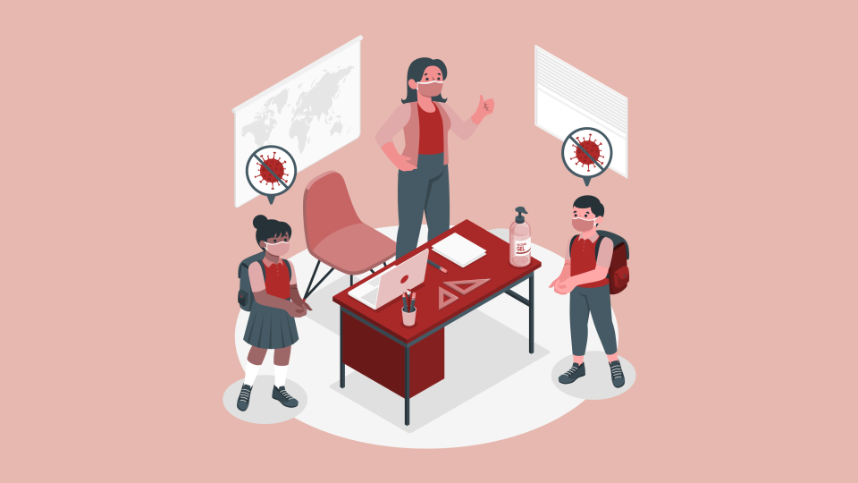

Home > Our Mission
Med n’ Ed is a nonprofit organization committed to giving proper medical and educational access to all in need. We spread awareness to youth about hygiene, sanity, nutrition, water safety while supporting the underprivileged in healthcare aspects. We gather a team of professionals that first hand gives treatments to underprivileged people along with providing them supplies. Locally, our work involves donations, fundraisers, and hands on projects/events to help the underprivileged in medical and educational aspects. It is our duty to give everyone the healthcare that they deserve.
We currently have 80+ members in 6 countries and 18 states, while engaging over 500 youth. In the near future, we hope to have over 300 members expanding into 9 countries
